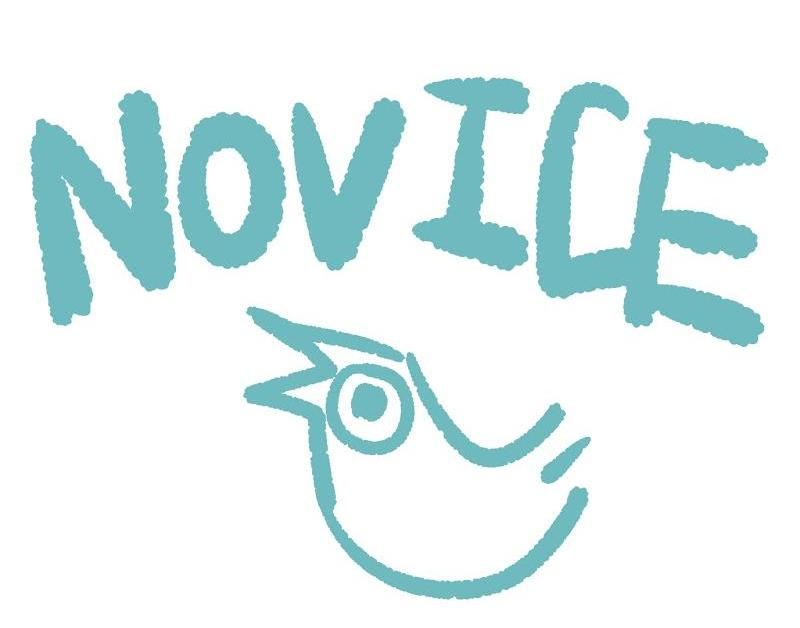
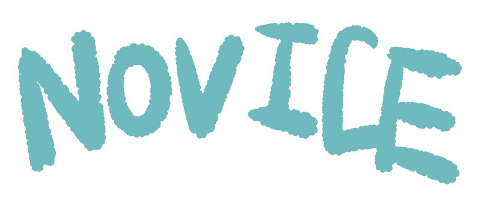
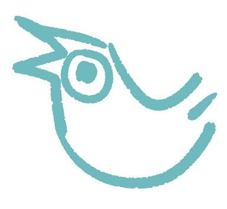
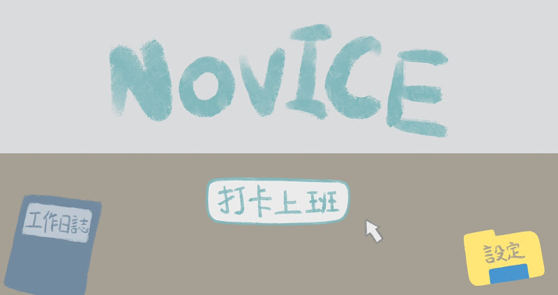
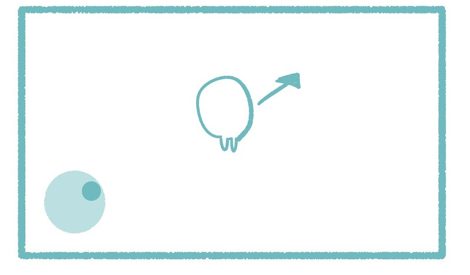
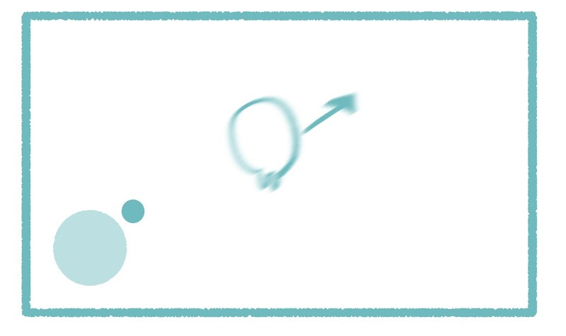
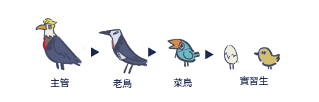

團隊成員:1411222006 郭娘伊、1411222016 黃宥寧、1411222017 蔡雨岑、
1411222029 林承佑、1411222035 彭泯宸、1411222041 陳櫟任、1411242020 戴妘倩
指導老師:陳賢錫、徐豐明
| 目錄 | ||||||||
| 封面 | 發想 | 遊戲類型 | 故事大綱 | 遊戲流程 | 遊戲風格與主角設計 | 市場分析 | 參考遊戲 | 分工與進度 |
| 操作方式 | 角色概念設計 | SWOT 分析 | 工作分配 | |||||
| 玩法介紹 | 地圖概念設計 | 目標市場與受眾 | 製作進度甘特圖 | |||||
| 流程圖 | BOSS關卡示意圖 | |||||||
| 彩蛋劇情 | ||||||||
|  |
| 遊戲名稱 NOVICE(菜鳥的意思) |
| Logo字體運用手寫及不規則的筆刷，以及亮眼清新的藍綠色，表現出遊戲是很休閒的適合所有年齡層 |
| 設計概念:畫面以簡潔可愛為主， 下方的小鳥為logo，直接把菜鳥形象化 |
 |
| ▲ 圖標/LOGO 設計 | |
| 遊戲開始介面 | |
|  | |
| 發想 回目錄 |
|
在忙碌工作或勤奮向學一整天後，玩手機遊戲應該是大部分人下班下課的休閒娛樂， 因為我們覺得要動腦的遊戲（例如：戰略手遊）或需要投入大量心思經營的遊戲（例如：開放世界手遊）不適合在想要好好放鬆時遊玩， 所以想製作出一款以休閒為主題並且能夠離線遊玩的遊戲，遊玩方式不會太複雜， 讓人能夠打發時間又可以在遊玩的同時感到放鬆，達到“玩遊戲=休息”的效果。 |
| 遊戲類型 回目錄 | |||||||||||||||||||||||||||||||||||||||||||||||||||||||||||||||||||||||||||||||||||||||||||||||||||||||||||||||||||||||||||||||||||||||||||||||||||||||||||||||
| 2.5D 單機 休閒離線小品遊戲 無限時 目的: 讓玩家在無聊時，有個可以打發大量時間的休閒遊戲 風格:第三人稱視角、多種2D場景 |
|||||||||||||||||||||||||||||||||||||||||||||||||||||||||||||||||||||||||||||||||||||||||||||||||||||||||||||||||||||||||||||||||||||||||||||||||||||||||||||||
| 故事大綱 回目錄 | |||||||||||||||||||||||||||||||||||||||||||||||||||||||||||||||||||||||||||||||||||||||||||||||||||||||||||||||||||||||||||||||||||||||||||||||||||||||||||||||
| 在這個冰冷無情的現代辦公室裡，員工們每天都在為自己的位置而鬥爭， 這裡充滿了政治鬥爭、背後捅刀、以及不計手段的競爭。 公司最高層的管理者只關心業績和利益，對於員工的福祉毫不在意。 在這個環境下，唯一的生存之道就是適者生存，並最終成為下一任主管。 |
|||||||||||||||||||||||||||||||||||||||||||||||||||||||||||||||||||||||||||||||||||||||||||||||||||||||||||||||||||||||||||||||||||||||||||||||||||||||||||||||
| 遊戲流程 回目錄 | |||||||||||||||||||||||||||||||||||||||||||||||||||||||||||||||||||||||||||||||||||||||||||||||||||||||||||||||||||||||||||||||||||||||||||||||||||||||||||||||
| 操作方式 | |||||||||||||||||||||||||||||||||||||||||||||||||||||||||||||||||||||||||||||||||||||||||||||||||||||||||||||||||||||||||||||||||||||||||||||||||||||||||||||||
|  |  | ||||||||||||||||||||||||||||||||||||||||||||||||||||||||||||||||||||||||||||||||||||||||||||||||||||||||||||||||||||||||||||||||||||||||||||||||||||||||||||||
|
▲使用手指頭控制圓圈，已改變人物在畫面中的方向
▲搖桿超出透明圓圈的範圍，會朝同方位快速前進 以閃避避免被吃掉，加速只能持續五秒 |
|||||||||||||||||||||||||||||||||||||||||||||||||||||||||||||||||||||||||||||||||||||||||||||||||||||||||||||||||||||||||||||||||||||||||||||||||||||||||||||||
| 玩法介紹 | |||||||||||||||||||||||||||||||||||||||||||||||||||||||||||||||||||||||||||||||||||||||||||||||||||||||||||||||||||||||||||||||||||||||||||||||||||||||||||||||
|  | |||||||||||||||||||||||||||||||||||||||||||||||||||||||||||||||||||||||||||||||||||||||||||||||||||||||||||||||||||||||||||||||||||||||||||||||||||||||||||||||
| ▲位階等級 | |||||||||||||||||||||||||||||||||||||||||||||||||||||||||||||||||||||||||||||||||||||||||||||||||||||||||||||||||||||||||||||||||||||||||||||||||||||||||||||||
|
|||||||||||||||||||||||||||||||||||||||||||||||||||||||||||||||||||||||||||||||||||||||||||||||||||||||||||||||||||||||||||||||||||||||||||||||||||||||||||||||